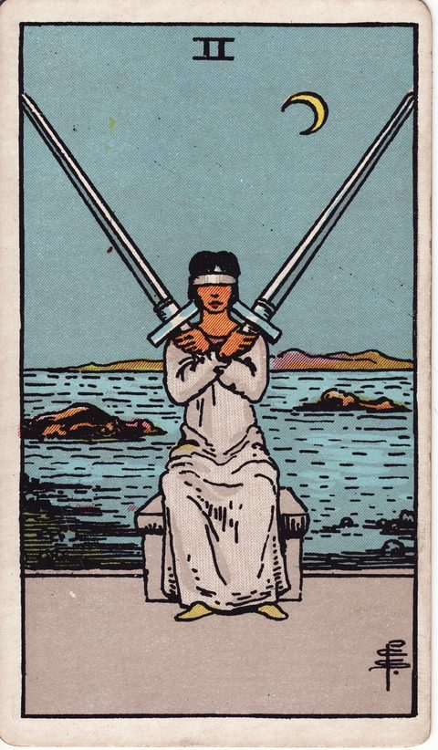
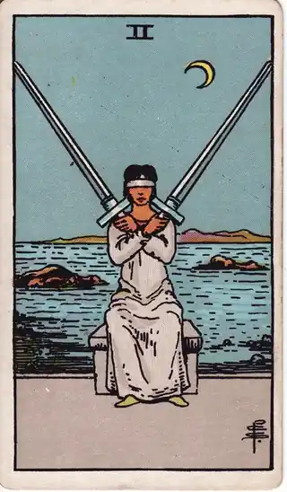

READING
When you're torn over whether to break up, five questions to sort out your feelings without hurrying the answer
(updated ) · DECIDE. editors

The feeling of liking them is probably still there. But the moments when being together tires you have increased. You picture the scene of bringing up breaking up, then you see the other person's face and cannot say it. The time spent torn over whether to break up continues quietly and at length.
Let me say this first: the goal of this page is not to produce a verdict on "whether you should break up." The goal is to reach a state where you can say you faced your own feelings and chose, whether you continue or draw a line under it. We are looking for your answer, not someone else's right answer.
In this article, I introduce five questions for sorting out your own feelings. The cards are used not as something that tells the future of the two of you, but as a trigger for looking at your own heart from a different angle.
Also, if you feel violence or strong control from the other person, please, before sorting out what you're torn about, secure your own safety and consult someone you trust or a specialist support service.
It is natural to be torn over whether to break up
People sometimes say, "if you're torn, haven't your feelings already cooled?" But having something you're torn about does not necessarily mean your feelings have cooled.
- You like the other person, but your ways of thinking about the future differ
- It is not that you have come to dislike them, but being together tires you
- You are afraid of the loneliness and the change in your life after breaking up
What people are torn about varies from person to person. First, without denying "yourself, being torn," let us look at its contents, separated little by little.
Question 1: Right now, between what and what are you swaying?

Two of Swords shows a blindfolded figure crossing two swords and keeping balance. Its keywords are "holding back a decision," "balance," and "stalemate."
Through this card's perspective, I ask myself this.
What is it that I don't want to let go of right now? And what is it that I want to change?
Thinking in the binary of "break up / don't break up" becomes painful. When you write out what lies beneath it — "what I don't want to let go of" and "what I want to change" — the true nature of what you're torn about comes into view.
Question 2: Could the dissatisfaction change through talking?
Among dissatisfactions within a relationship, there are things that can be changed through talking and working things out, and things that are hard to change.
- Things that look adjustable, such as how often you are in contact and how you spend time together
- Things that only fit if one of you endures a great deal, such as values and hopes for the future
- Things you have already talked about many times, but that did not change
If there is a dissatisfaction you have not yet expressed, it may be worth putting it into words once before you decide to break up. Things that did not change no matter how many times you expressed them become, in themselves, important material for judging.
Question 3: Can your values stay close from here on, too?

The Lovers is a card that stands for "choice," "harmony," and "values aligning." It is a card that gives you a perspective not only of the feeling of liking someone, but of whether you can keep choosing how to live from here on, together.
Marriage and children, where you live, how you use money, how you face work. Even if the differences are small now, try picturing whether, when a big choice is pressed on you in a few years, the two of you are likely to face the same direction.
Question 4: Are you trying to decide with a tired head?

When what you're torn about continues for a long time, your heart and body wear down. Four of Swords is a card showing a figure lying quietly and resting, and its keywords are "rest," "recovery," and "recuperation."
If you make a big decision right after a fight, or on a night when you are exhausted, you may later feel "I wasn't calm at that time."
- Take a little distance, and take time for yourself
- Set your sleep and meals in order, and regain room in your heart
- In a calmer state, return to this question once more
Resting is not running away from the relationship. It is preparation for checking your own true feelings. If the sense of being tired of deciding feels strong, see How to think when you're too tired to decide as well.
Question 5: Which choice would the self of one year from now want you to have made?
Finally, try picturing yourself a little further ahead. If the self of one year from now spoke to the self of today, what would they say? It might be "you talked it through well," or it might be "you drew the line well."
Whichever you choose, the loneliness and what you're torn about will not become zero. But if you have the feeling that you faced your own feelings and chose, it becomes easier to spend the time that follows in a forward-looking way.
Each time you sway, return to the record
Feelings sway at every conversation, and at every change in the other person's attitude. On a day when they were kind, "I want to keep going after all"; on a night when they were cold, "I want to end it now." That swaying itself is natural. But if you think it over from zero each time you sway, you will keep going back and forth in the same place forever.
So please keep your answers to the five questions in a record. When you read them back on a night when you have swayed back, you can draw a line — "I have already thought about this," "my true feelings are written here." If you also add the results of your conversations, you can see from the record, not from a feeling, whether the relationship is moving forward or repeating the same dissatisfaction. That becomes solid backing for a decision to continue, and for a decision to break up, too.
In closing
It is only natural that the answer to whether to break up does not come out in a single night. What matters, before the content of the answer, is being able to say "I put my own feelings into words, and chose on that basis." Build up the sorting in small steps, and find your answer.
Related decision guides
Cards related to this article

More reading
- The types of free tarot readings and how they differ — where the "that feels spot-on" feeling comes from, and how to use them for a decision
- When you're torn over whether to keep going or quit. Standards for letting go of attachment
- Why I, who don't believe in fortune-telling, made tarot into a decision-making tool
- Why the more you ask for advice, the less you can decide, and how to get your own voice back
- When you're torn over whether to keep your current job. How to read a plateau in your career